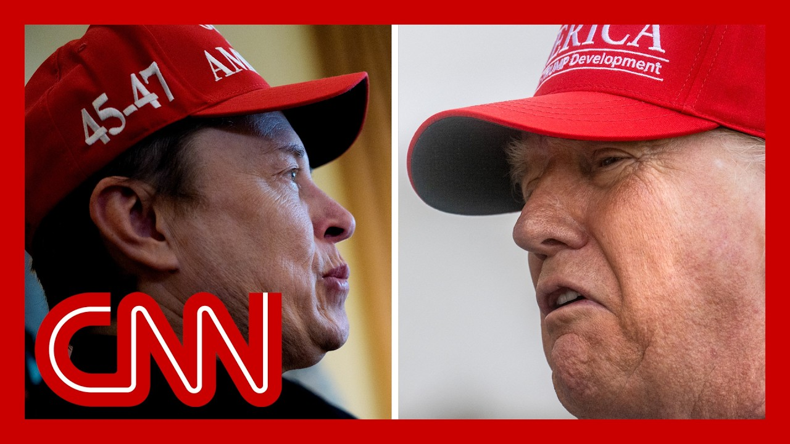

【CNN News 20250702 特朗普威胁用DOGE对付马斯克】
Summary: The feud between Trump and Elon Musk escalates as Trump threatens to use DOGE to investigate federal subsidies received by Musk's companies, while Musk retaliates by vowing to back primary challengers against lawmakers supporting Trump's spending bill and even proposing a new political party.
摘要： 特朗普与马斯克的争执升级，特朗普威胁用DOGE调查马斯克公司获得的联邦补贴，而马斯克则反击称将支持反对特朗普支出法案的议员初选挑战者，甚至提议成立新政党。

⏱️ Estimated Reading Time: 18 min
📚 四级生词 📚 六级生词 📚 雅思生词 📚 托福生词 📚 专八生词 📚 SAT生词 📚 考研生词 📚 GRE生词 📚 高考生词
He's a steady set.
他是个稳定的人。
He's losing his EV mandate and he's a steady set.
他失去了电动汽车授权，但他是个稳定的人。
He's very upset about things but you know he could lose a lot more than that.
他对很多事情感到不满，但你知道他可能会失去更多。
Thank you.
谢谢。
You're right.
你说得对。
He's a lot more than that.
他远不止如此。
Elon can lose a lot more than that.
马斯克可能会失去更多。
I don't know.
我不知道。
I think we'll have to take a look.
我想我们得看看。
We might have to put dojos on Elon.
我们可能得用dojos对付马斯克。
You know dojos?
你知道dojos吗？
Dojos is the monster that might have to go back and eat Elon.
Dojos是可能回头吞噬马斯克的怪物。
That's not gonna be terrible.
这不会太糟糕。
This morning the Trump Elon Musk feud is back on.
今天早上，特朗普和马斯克的争执再次爆发。
As lawmakers worked as we've now been talking about overnight the president worked as social media hitting back at Musk.
正如我们整晚讨论的那样，总统通过社交媒体回击马斯克。
In a late night post Trump suggested that dojos should investigate federal money that musk companies have received writing and at one point that Elon may get more subsidy than any human being in history by far.
在深夜的帖子中，特朗普建议dojos调查马斯克公司获得的联邦资金，并写道马斯克可能是有史以来获得补贴最多的人。
And without subsidies, Elon would probably have to close up shop.
如果没有补贴，马斯克可能得关门大吉。
Perhaps we should have dojos take a good hard look.
也许我们该让dojos好好查一查。
Elon Musk earlier had picked back up on his attacks on the president's massive tax and spending bill.
马斯克早些时候重新开始抨击总统的大规模税收和支出法案。
Remember he called it disgusting at one point.
记得他曾称其“恶心”。
Musk even vowed to back primary challengers for any lawmaker who voted for it.
马斯克甚至誓言支持任何投票支持该法案的议员的初选挑战者。
Or he also said he could start a new political party if the bill passes.
他还表示，如果法案通过，他可能成立新政党。
Hadass Gold tracking this element of this ongoing story and saga.
Hadass Gold正在追踪这一持续事件的发展。
What's going on here this time?
这次又发生了什么？
The Hadass.
Hadass。
This is significant because this is the first and starkest political threat that Elon Musk has made about his political future.
这很重要，因为这是马斯克对其政治未来发出的最直接的政治威胁。
We were waiting.
我们一直在等待。
There's lots of questions.
有很多问题。
What will Elon Musk really do going forward in the midterms?
马斯克在中期选举中会怎么做？
Remember he had said he was gonna kind of step away from the political spending.
记得他曾说要退出政治支出。
And it should be taken seriously because when Elon Musk gets laser focus gets obsessed with something.
这应该认真对待，因为当马斯克对某事着迷时。
He has the willpower and he has the funds to get it done.
他有意志力和资金去实现它。
And he made essentially two really big kind of threats and promises over the last 12 hours or so.
过去12小时左右，他发出了两大威胁和承诺。
The first, as you know, he said he will back any primary challenger in Congress who was talked about reducing government spending but then voted for this big, beautiful bill saying it will be the last thing he will do on earth.
首先，他说将支持任何曾谈论削减政府支出却投票支持这一法案的国会初选挑战者，并称这是他在世上做的最后一件事。
Look at this poster that he said will feature the face of any member of Congress who does this.
看看这张海报，他说将展示任何这样做的国会议员的脸。
It shows Pinocchio in flames and saying this is what people will see as they go to vote.
海报上是燃烧的木偶匹诺曹，并称这是人们投票时会看到的。
And he's already declared the first candidate that he will be backing up.
他已宣布将支持的第一位候选人。
That will be of course representative Masi.
当然是代表Masi。
Masi was Republicans of course to vote against the House version of the spill last month.
Masi上个月投票反对众议院版本的支出法案。
And he has been President Trump's number one target so far for Republican primaries going forward.
他一直是特朗普在共和党初选中的头号目标。
So that again puts him on the opposite end of the spectrum for President Trump once again.
这再次让他与特朗普对立。
And then he did promise this.
他还承诺。
He said that he will create a new political party called the America Party.
他说将成立名为“美国党”的新政党。
Remember, he is a political action committee is called the American pack.
记得他的政治行动委员会叫“美国包”。
He says if this insane spending bill passes, the America party will be formed the next day.
他说如果这一疯狂支出法案通过，“美国党”将在次日成立。
Our country needs an alternative to the Democrat Republican Uniparty so that the people actually have a voice.
我们国家需要替代民主共和两党的选择，让人民真正发声。
This is a significant change to Musk's plan.
这是马斯克计划的重大转变。
Remember, he spent more than $275 million to back President Donald Trump as well as other Republicans running last year.
记得他曾花费超2.75亿美元支持特朗普和其他共和党人。
He had promised something like $100 million to President Trump's outside groups ahead of the 2026 midterms.
他承诺在2026年中期选举前向特朗普外部团体提供约1亿美元。
And just as recently as March according to FEC filings, his packet supported Republican candidates in Florida.
根据FEC文件，就在今年3月，他的资金还支持佛罗里达州的共和党候选人。
I should note also Tesla investors, they do not want this.
需注意特斯拉投资者也不希望如此。
We saw President Trump already threatened Elon Musk saying that he might even put doge.
我们看到特朗普已威胁马斯克，甚至可能动用DOGE。
Elon Musk's own creation against him.
用马斯克自己的发明对付他。
Tesla investors do not want this.
特斯拉投资者不希望这样。
They want it.
他们希望。
Elon Musk out of politics focusing on his companies.
马斯克退出政治，专注公司。
The Robotox taxi just launched.
Robotox出租车刚推出。
There's a lot of things going on with SpaceX, but it seems though Elon Musk is not going to give this up.
SpaceX有很多事在进行，但马斯克似乎不会放弃。
Let us stand by and see where this ends now.
让我们拭目以待结局。
It's great to see it out.
很高兴看到它公开。
As we speak, he continues to post on X.
就在我们说话时，他仍在X上发帖。
So things are changing by the minute here.
事态每分钟都在变化。
I'd ask thank you so much.
非常感谢。
Sir.
先生。
All right.
好的。
From the voter rama to the fighter rama.
从选民rama到战士rama。
Joining me now are CNN political commentator Bakari Sellers and Mori Gillespie.
现在加入我们的是CNN政治评论员Bakari Sellers和Mori Gillespie。
The former press advisor to Republican House Speaker John Banger.
共和党众议院议长John Banger的前新闻顾问。
All right.
好的。
Let me start with you, Mori.
Mori，从你开始。
This is a question that I think is on a lot of people's minds.
这是很多人心中的问题。
You see this fight, right, going back and forth with Elon Musk and Donald Trump.
你看到马斯克和特朗普的争执来回升级。
Are Republicans more afraid of Donald Trump, Elon Musk, or their own constituents?
共和党人更怕特朗普、马斯克还是自己的选民？
I mean, this is really childish, but it wasn't just a few months ago that Elon Musk said if there are any member or senator who stands in the way of Trump's agenda, will be primary.
这很幼稚，但几个月前马斯克曾说任何阻碍特朗普议程的议员都将面临初选挑战。
So now it's anyone who stands in the way of this Trump's agenda.
现在则是任何阻碍特朗普议程的人。
If they don't say it in the way of it, they're going to be primary.
如果他们不表态反对，就会面临初选挑战。
I mean, he may change his mind in a month.
他可能一个月后就改主意。
So it's really hard to say I don't think Elon Musk is their threat.
所以很难说马斯克是他们的威胁。
However, if Donald Trump's not going to show up for them in their primaries in their reelection bids in 2026, then it's their constituents that he most afraid of because that's what Trump is the lame duck president.
但如果特朗普不参与2026年初选或连任竞选，他们最怕的还是选民，因为特朗普已是跛脚鸭总统。
He has not been really keen to go out.
他并不热衷参与。
What is he going to do for every single House race that said Jeopardy here?
他能对每个众议院竞选做什么？
It's a lot.
这很难。
So I think it's their constituents that she most afraid of here.
所以我认为他们最怕的是选民。
McCarrie, what does this say about the money in politics and these two men going back and forth?
McCarrie，这反映了政治中的金钱问题吗？还是两人单纯的争执？
Or is this about something different?
或是其他原因？
I think it's about something different.
我认为是其他原因。
I think that it's very, very petty and very childish.
这非常小气和幼稚。
I think that it's kind of like the real Housewives of the Beltway.
就像《华盛顿的真实主妇》。
I mean, he basically called him a welfare queen and told him to go back to where he came from.
特朗普称马斯克是“福利女王”，让他“滚回老家”。
Wow.
哇。
But I mean, when you juxtapose that against the fact that like in my home state of South Carolina, 220,000 people will be kicked off a Medicaid in the Affordable Care Act or North Carolina, 600,000 people are going to lose insurance coverage.
但对比南卡罗来纳州22万人将失去医保或北卡罗来纳州60万人失去保险的事实。
When you juxtapose it against the people are going to lose snap benefits and health insurance.
对比人们将失去食品券和医保。
It looks really, really small.
这显得非常渺小。
We've always said, Democrats have always said that Donald Trump's a very small man and you see that.
民主党一直说特朗普是个小人物，现在你看到了。
I'm trying to figure out how he has the energy and the wherewithal to tweet throughout the middle of the night at some other man that he just simply doesn't like.
我不明白他为何有精力深夜发推攻击不喜欢的人。
Is there not enough going on in the world for him to actually grapple with?
难道世界上没更重要的事了吗？
And Elon Musk, you know, I believe in radical pragmatism.
至于马斯克，我相信激进实用主义。
And so I want to destroy this bill just as much as Elon Musk.
所以我和马斯克一样想摧毁这一法案。
So the enemy of my enemy is my friend.
敌人的敌人是朋友。
And I guess I'll take Elon Musk in this battle.
这次我站马斯克。
All right.
好的。
With us now, Lee Carter, strategic communications expert and polster and Democratic strategist Julie Rizinski.
现在加入我们的是战略传播专家Lee Carter和民主党策略师Julie Rizinski。
Let me just start with you, Lee.
Lee，从你开始。
There's this new round in this fight.
争执再次升级。
Musk is putting himself out there again.
马斯克再次高调发声。
What will that feel like for those senators who've been up all night?
这对熬夜的参议员意味着什么？
Who have to vote on this shortly?
他们很快要投票。
I mean, on the one hand, it's not surprising that that Elon Musk is doing this has been very consistent about spending.
一方面，马斯克一贯反对支出，这不意外。
This is very much what he's been talking about the whole time.
他一直强调这点。
On the other hand, the question is, it's really just about his ego.
但问题在于这是否只是他的自尊心作祟。
And are we getting in the limelight and having a fight?
还是为了曝光度和争斗？
But I think that the Republicans who are making the vote need to not be distracted by this.
但投票的共和党人不应分心。
We're seeing, though, a huge fracture within the Republican Party.
然而共和党内部分裂严重。
75% of Maga Republicans support this bill.
75%的MAGA共和党人支持该法案。
But 75% of non-Maga supporters of Republicans actually oppose the bill.
但75%的非MAGA共和党人反对。
So you've got a huge fracture on my party.
党内分歧巨大。
And I think Elon Musk is symbolic of what that is.
马斯克是这一分裂的象征。
And just as people know, Trump, on his true social platform, has responded to Musk already.
特朗普已在Truth Social上回应马斯克。
We haven't heard from out loud, which we may shortly.
我们尚未听到公开回应，但可能很快会有。
But among other things, Trump accuses Musk of wanting subsidies.
特朗普指责马斯克想要补贴。
He says Elon may get more subsidy than any human being in history by far.
他说马斯克可能是有史以来获得补贴最多的人。
And without subsidies, Elon will probably have to close up shop and head back to South Africa.
没有补贴，马斯克可能得关门并回南非。
So, Julie, the significance of this new rift, what do you see?
Julie，你认为这一新裂痕的意义是什么？
Well, first of all, Trump is not wrong.
首先，特朗普没错。
In the sense that Elon Musk has a tremendous amount of taxpayer subsidies from United States going to his businesses.
马斯克的企业确实获得大量美国纳税人补贴。
And the reality is that if Trump takes away those subsidies or threatens them, I think Musk will cave the way he caved the last time when Trump came after him.
如果特朗普取消或威胁这些补贴，马斯克可能会像上次一样屈服。
I mean, this is not a balanced fight because Elon Musk is the client in Donald Trump is the person who's providing him with the money in the form of the presidency.
这不是对等斗争，因为马斯克是客户，特朗普是总统，掌握资金。
So, look, Musk and Tweet all he wants, but the reality is that if Trump actually moves against him and takes away his subsidies or threatens them, I suspect Musk will cave.
马斯克可以发推，但如果特朗普行动并取消补贴，他可能会屈服。
The one difference with Elon Musk, whenever we're talking about him, is just a huge amount of money he has.
马斯克的不同在于他拥有巨额资金。
And one of the other things he's threatening is to launch this third party, or to fund a third party here.
他还威胁成立或资助第三政党。
You guys have both worked in this business and have for a long time.
你们长期从事这一领域。
How real do you think that threat is what difference would that make?
这一威胁有多真实？会有什么影响？
I don't think it's real because I don't think Elon Musk will be the richest guy in the world or have that money if Trump moves against him.
我认为不真实，因为如果特朗普行动，马斯克可能不再是首富。
I mean, if Trump actually uses his platform to disqualify Elon Musk and also to take away his subsidies from SpaceX, take away subsidies for EVs and everything else that Musk wants.
如果特朗普利用平台打压马斯克并取消SpaceX和电动汽车补贴。
It's going to be very hard for Musk and Tesla, which is the primary derivative of his money to survive, especially because Tesla's already going down.
特斯拉作为主要收入来源将难以生存，尤其其股价已下跌。
Democrats are not buying Tesla.
民主党人不买特斯拉。
And if Trump goes after him, Republicans won't be buying Tesla either.
如果特朗普打压，共和党人也不会买。
It's just, it's bad business practice for Musk.
这对马斯克是糟糕的商业决策。
If he does this, if he does do this and people follow him and he does have a big following in Twitter and has this riff with Trump, you know, it doesn't help Republicans, obviously, because a third party will take away from them.
如果他这么做且有人跟随，显然不利于共和党，因为第三党会分流选票。
Democrats are certainly not voting for any Elon Musk back party.
民主党人不会支持马斯克的政党。
So I don't think Trump is going to let it get to that point because if he does, he understands it's going to harm him.
所以特朗普不会让事态发展到那一步，因为这会伤害他。
It's going to harm the MAGA movement and he does have this big sort of damage.
这会伤害MAGA运动，他手握补贴这一大棒。
He's hanging over Musk's head in the form of subsidies.
他以补贴的形式悬在马斯克头上。
So my, my feeling is that Donald Trump is the one that has the huge following and Elon Musk certainly helped Donald Trump in election.
所以，我的感觉是，唐纳德·特朗普才是拥有大批追随者的人，而埃隆·马斯克确实在选举中帮助了特朗普。
There's no question about it.
这一点毫无疑问。
It gave him credibility.
这给了他可信度。
It gave him some voters that were on the fence.
这给了他一些犹豫不决的选民。
But it wasn't Elon Musk who was center stage.
但站在舞台中央的不是埃隆·马斯克。
And I don't think that we're going to see people follow Elon Musk in the same way that we saw the MAGA movement.
而且我认为人们不会像追随MAGA运动那样追随埃隆·马斯克。
And certainly we have evidence of that in the Supreme Court elections and other things that, you know, Elon Musk tried to have huge influence and he ultimately failed.
当然，我们在最高法院选举和其他事情上看到了证据，你知道，埃隆·马斯克试图产生巨大影响，但最终失败了。